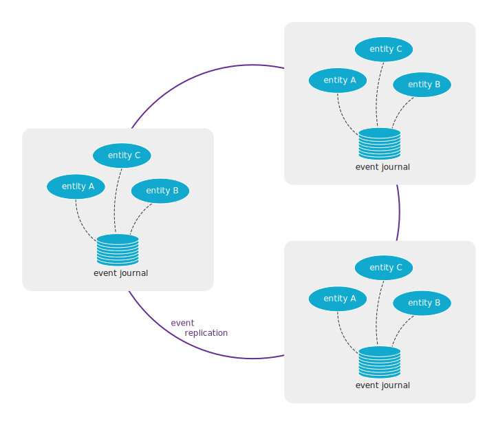

Feature Summary
Akka Distributed Cluster has two main features:
- Projections over gRPC - asynchronous brokerless service-to-service communication
- Replicated Event Sourcing over gRPC - active-active entities
Projections over gRPC
You would use Projections over gRPC to implement asynchronous brokerless communication between Microservices implemented with Akka.
We often recommend asynchronous communication between Microservices by using a message broker, such as Kafka. With Projections over gRPC you could have the same advantages of loosely coupled and reliable message delivery without the burden and cost of operating the broker infrastructure. As a bonus, you would gain low-latency cross region delivery of messages.

Projections over gRPC uses the event journal on the producer side and Akka Projections event processing and offset tracking on the consumer side. The transparent data transfer between producers and consumers is implemented with Akka gRPC.
The consumer starts an event stream by asking the producer to stream events from the consumer’s last offset. Several consumer services can connect to the same producer service, and each consumer can process the events in its own pace independent of how fast the events are created or how fast other consumers can handle the events.
In the same way as for any Akka Projection, the consumer keeps track of the offset for the last event it has processed so that it can continue from the last offset in case of errors or restarts. Offsets are also used for event de-duplication to achieve exactly-once processing.
The producer and consumer services are typically different Microservices, i.e. different Bounded Context in Domain-Driven Design (DDD) terminology, but it can also be used within one logical Microservice deployed to different locations.
Filters can be used when a consumer is only interested in a subset of the entities. The filters can be defined on both the producer side and on the consumer side, and they can be changed at runtime.
Events are stored in a database on the producer side. There is no direct database access between consumer and producer. The offsets on the consumer side are stored in a database, but that is a different database from the database of the producer.
Learn more
Replicated Event Sourcing over gRPC
You would use Replicated Event Sourcing over gRPC for entities that can be updated in more than one geographical location, such as different cloud regions. This makes it possible to implement patterns such as active-active and hot standby.

Replicated Event Sourcing gives:
- redundancy to tolerate failures in one location and still be operational
- serve requests from a location near the user to provide better responsiveness
- allow updates to an entity from several locations
- balance the load over many servers
The replicas of the entities are running in separate Akka Clusters for the reasons described in One Akka Cluster or many connected clusters? and a reliable event replication transport over gRPC is used between the Akka Clusters. The replica entities belong to the same logical Microservice, i.e. same Bounded Context in Domain-Driven Design (DDD) terminology.
Filters can be used to define that a subset of the entities should be replicated to certain locations. The filters can be changed at runtime.
Events are stored in a database for each replica. There is no direct database access between a replica and the database of another replica, which means different databases, and even different database products, can be used for the replicas.